Noah Never Built a Sarcophagus
The Egyptian Loanword Claim for tebah
The Hebrew word for Ark is tebah.
What does tebah mean? Can't say for sure. Maybe lifeboat.
Where does tebah come from? No idea. Maybe a pre-flood word.
tebah (תֵּבָה)1 appears only twice in the Hebrew Bible — once for Noah's vessel (Genesis 6–9) and once for Moses' baby basket (Exodus 2:3, 5).2 It is never used for the Ark of the Covenant, which is a completely different Hebrew word (aron, אָרוֹן, 202 occurrences). Nor is it used for anything else in any Hebrew text — just the ark and the basket. You might call it a functional dis legomenon.3 This paper examines the claim that tebah is an Egyptian loanword meaning chest or coffin.
The Citation Trail
A Note on Context
Brugsch (1867) and Erman (1892) were the two leading scholars working at the frontier of Egyptian Hieroglyphics — a field begun by Champollion in 1822.4 Egyptological research was still being established, and transliteration had not yet been standardised; the system Gardiner formalised in 1927 grew out of the conventions that Brugsch, Erman, and their contemporaries had been developing across the preceding six decades. They also worked within two assumptions common to their era: that Egypt was the source of everything ancient, and that the biblical flood narrative was of uncertain historicity. Both assumptions shaped what they were looking for. Brugsch's comparison was subsequently promoted as a probable loan word through later scholars.
This paper focuses on the Egyptian loanword claim — the dominant tradition in modern lexicography. The Akkadian etymology proposed by Jensen (1889) and others is noted but not addressed here; it has attracted less scholarly traction and would require separate treatment.
What happened: Brugsch did not say it was a loanword. Erman did and then he quietly changed his mind — after BDB had already cemented it. There is more to the story.
Brugsch (1867)
The loanword claim is attributed to Brugsch (1867) — "apparently,"5 as Cohen put it. The tradition cites ḏb3.t → tebah as his equation, but Brugsch's sign table (Vol. 1, Einleitung p.V–VI)6 has no ḏ consonant — searching by ḏb3.t finds nothing. Brugsch has four t-variants:
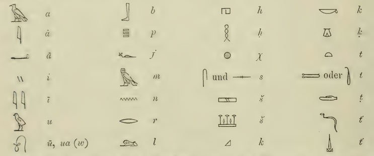
Brugsch, Wörterbuch Vol. 1 — his sign table. No ḏ consonant; four t-variants cover the range.A search across all seven volumes for OCR-readable terms — Latin "arca," Hebrew תָּבָה , and Brugsch's transliterations under all four t-variants7 — found only one connection between Egyptian and Hebrew tebah: Vol. 4, p.1628. Reading this page image by Thoth.AI8 confirms two mentions of Hebrew תָּבָה , both within the T-B root entry spanning pages 1624–1635. The T-B entry alone covers some 25 distinct meanings, written with a variety of hieroglyphic spellings but all rendered as teb in Brugsch's transliteration — a remarkable cluster of homophones.9
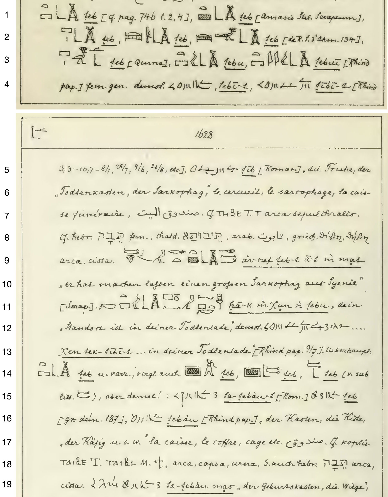
Brugsch, Wörterbuch Vol. 4, pp.1627–1628. Key lines: 8 — first mention, Cf. hebr. תָּבָה fem. … arca, cista; 18–19 — second mention, S. auch hebr. תָּבָה arca, cista — pa-tebāu mas, "the birth-box, the cradle."
Brugsch's Hieroglyphisch-Demotisches Wörterbuch (1867–1882) is like a Rosetta Stone of comparative Semito-Egyptian lexicography — the first systematic attempt to map Egyptian vocabulary simultaneously across hieroglyphic, Demotic, Coptic, Hebrew, Aramaic, Arabic, Greek and Latin.
| # | Brugsch transliteration | Modern transliteration | Brugsch's languages | English summary |
|---|---|---|---|---|
| 1–4 | teb, tebu, tebuī, tebī-t | ḏbꜣ, ḏbꜣ.w, ḏbꜣ.wy, ḏbꜣ.t | De | chest/coffin/sarcophagus and variants — Serapeum, Rhind pap., Qurna, de Rougé, Ahmose tomb 134 |
| 5–6 | teb | ḏbꜣ | De, Fr | "the trunk, the coffin, the sarcophagus, the funerary chest" |
| 7–8 | — | Copt. ⲑⲏⲃⲉ (Sahidic) | Ar, Copt, Lat, Heb, Aram, Gk | ṣandūq al-mayyit; arca sepulchralis; תֵּבָה fem.; תֵּיבְתָא; تابوت; θίβη, θίβην — first mention of Hebrew tebah |
| 9–13 | ār-nef teb-t ā-t m mas; hā-k m Xen n tebu; Xen tek-tebī-t | ꜥr.n=f ḏbꜣ.t ꜥꜣ.t m mꜣs; hꜣ.k m ḫn(w) n ḏbꜣ.w; ḫn tk-ḏbꜣ.t | Eg, Lat, De, Dem | Lat. arca, cista — "He has had made a great sarcophagus from Syria"; [Serapeum stela] "your place in your coffin-chest"; Demotic: "in your coffin-chest" [Rhind pap. col.9, l.7] |
| 14–17 | teb, tebāu | ḏbꜣ, ḏbꜣw | De, Fr, Ar, Copt | tebāu — box, chest, cage; [gr. dem. 187]; [Rhind pap.] la caisse, le coffre, cage; cf. Coptic |
| 18 | — | Copt. ⲧⲁⲓⲃⲉ (Sahidic), ⲧⲁⲓⲃⲗ (Bohairic) | Copt, Lat, Heb | TAIBE/TAIBL — arca, capsa, urna; תֵּבָה arca — second mention of Hebrew tebah |
| 19 | sa-tebāu mas | sꜣ-ḏbꜣw (n) ms(j) | De | "the birth-box, the cradle" |
At the first mention of tebah (rows 7–8), Brugsch places Hebrew תֵּבָה alongside Arabic تابوت, Aramaic תֵּיבְתָא , Greek θίβη, Coptic ⲑⲏⲃⲉ, Latin arca sepulchralis, and Chaldean — six ancient languages all clustering around the same word. The line reads: cf. hebr. תָּבָה fem. … arca, cista. The example Brugsch cites — "He has had made a great sarcophagus from Syria"10 — is funerary, not nautical. This is comparative linguistics, not a loanword claim.
The second mention (line 18) sits in an entirely different semantic cluster — boxes, chests, cages — not the funerary chest entry. Yet both mentions carry arca, cista together. Brugsch found one Egyptian word (teb), one Hebrew word (tebah), and observed that Jerome's two renderings both fit. He is not splitting tebah into a Noah word and a Moses word. Again, no loanword claim.
The Coptic confirms the same. What look like two entries — THBE and TAIBE/TAIBL — are dialect variants of a single word, confirmed by Crum's Coptic Dictionary (1939, p.397a), covering chest, coffin, clothes box, grain container, and pouch. One Coptic word, one Egyptian root, one Hebrew word. The Noah/Moses split exists only in the translations — and that is precisely where Brugsch found it.11
His own abbreviations list (Vol. 1, p.XII) confirms cf. means confer — Latin for "bring together," meaning "compare." It is an invitation to notice a similarity, not an assertion of a loanword. His preface explicitly distinguishes Lehnwörter (loanwords) from stammverwandte Wurzeln (cognate roots). Had he claimed a loanword his own methodology required him to say so. He didn't.
Brugsch's Lehnwörter examples at Einleitung p.IX are demonstrably late Aramaic loans into Hebrew. tebah is ancient core biblical vocabulary — it fits neither category. His cf. was an honest acknowledgement of that uncertainty.
What just happened? Brugsch had 12 consecutive pages of T-B Egyptian words, with 25 distinct meaning clusters, yet he only picked 2 words to compare with tebah. He could have picked some suitable words like "close / shut / seal", or "go in circles / circumnavigate" or this rather apt word "ship's keel / the ship itself". Instead, he picked "box". Why?
He gives himself away. Brugsch's entry at p.1628 also cites Greek θίβη, θίβην alongside the Hebrew. These are not independent Greek translations, they are not even Greek words. They are a telltale sign of Septuagint's Exodus transliteration of תֵּבָה into Greek letters. The LXX Exodus team, unable to translate the word, simply wrote the sound. Brugsch took their transliteration as Greek confirmation of his comparison. (see Excursus The LXX)
The sound of Egyptian is matched with Hebrew. The meaning is matched with the LXX. Brugsch simply wrote cf. — compare.
Erman (1892)
Erman's 1892 paper argued the broader thesis that Egyptian and Semitic languages are related families.12 The tebah entry is one data point in a long list — not its main focus, or even a minor focus.
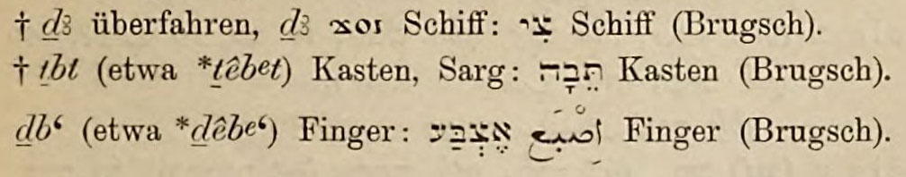
Erman, ZDMG 46 (1892), p.123 — three consecutive entries in the ḏ section, all crediting Brugsch. The tebah entry is the second line.
† tbt (etwa *têbet) Kasten, Sarg: תֵּבָה
Kasten (Brugsch). German
† tbt (approximately *têbet) box, coffin: תֵּבָה
box (Brugsch). English
Note: The initial letter is t, not l.13
Erman's † is his loanword marker. He applies it and credits Brugsch, yet Brugsch never declared a loanword nor a cognate — he wrote cf. Erman took a comparison and converted it into a loanword, crediting Brugsch who didn't quite make that claim.
Erman's loanword symbol † went on to have quite an effect.
BDB (1906)
Brown, Driver and Briggs14 — the standard Hebrew lexicon for a century — converted Erman's one-line journal entry into an etymological claim.
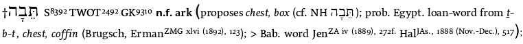
BDB, A Hebrew and English Lexicon of the Old Testament (1906), p.1062 — the tebah entry.
"prob. Egypt. loan-word from t-b-t, chest, coffin (Brugsch, ErmanZMG xlvi (1892), 123)"
BDB had read Erman's paper — citing it by exact volume and page, and quoting the same as Erman's German Kasten, Sarg — now in English as chest, coffin. BDB took that, cited both Brugsch and Erman as joint authority, and softened Erman's definite † to probable. So Brugsch only compared the word tebah, Erman turned it into a loanword, and BDB thought Erman was probably right.15
The BDB highlights a couple of contradictions but does nothing with them. The LXX used two different Greek words for the same Hebrew word — thibis for Moses, kibotos for Noah — noted, no comment. Moses' basket is made of papyrus — which sits awkwardly against a "chest or coffin" etymology — noted, no comment. (see Excursus) BDB also noted a Babylonian etymology proposed by Jensen (1889) but didn't adopt it.16 They chose the Egyptian origin instead. Both alternatives came from the same 19th century scholarly culture that assumed Hebrew scripture derived from somewhere else.
BDB was tightly bound to the Documentary Hypothesis. That framework assumes Genesis and Exodus are borrowed stories from surrounding cultures, making tyhem the place to look in search of the original. Egyptian or Babylonian — either way, the Hebrew had to have got it from somewhere else. But there is a problem with JEDP here. The Genesis tebah is supposedly shared with two writers — J (Genesis 6:8-10; 7:1-10; 8:6-12, 20-22) and P (Genesis 6:9-22; 7:11-24; 8:1-5; 9:1-17), and the Exodus tebah typically assigned the E author. This means 3 separate authors chose the same rare word. Vanishingly small odds, and yet another JEDP failure.
The qualifier "prob." was retained by most traditions, some were so sure of the Egyptian loanword they dropped "prob" altogether. When we look today, the Biblical Archaeology Society is more convinced than BDB: "biblical Hebrew uses an Egyptian loanword tebah." Others retain "probably" but now cite two competing donor words — either db't or tbt — unable to agree on which Egyptian word the loan came from.
Erman & Grapow (1926) and Gardiner (1927)
The trail goes back further than 1926:
- 1892 — Erman makes tebah an Egyptian loanword in ZDMG
- 1906 — BDB cites him, with "prob."
- 1921 — Erman's own Aegyptisches Handwörterbuch — no tebah
- 1926 — Erman-Grapow Wörterbuch — no tebah
BDB cited the 1892 Erman — 15 years before he quietly changed his mind.
Erman did not accidentally forget tebah — twice. Cohen made this clear:17
"This equation was accepted by A. Erman… It has been accepted by biblical scholars ever since. Note, however, that this equation is conspicuously absent from A. Erman and H. Grapow, Wörterbuch der Ägyptischen Sprache…"
The Wörterbuch der Ägyptischen Sprache is not a work where things get accidentally omitted. Over 16,000 entries, seven volumes, a project spanning 70 years and two scholars' entire careers — the most comprehensive Egyptian dictionary ever produced,18 and tebah is not in it.
Egyptian transliteration was not standardised until Gardiner (1927).19 Brugsch used his own system; Erman refined it in his Aegyptische Grammatik (1889) and was already using some of it in 1892. Both systems lacked the consonant ḏ, writing the whole T-B root family as teb or tbt regardless of which hieroglyph it was representing. The result is that two detectably different glyphs — different determinatives, different semantic clusters on the same page — come out as the same string of letters. The letters were taken as a single word meaning both box and coffin, when there were actually two distinct Egyptian words — apparently — according to Brugsch.
|
Note that Brugsch's 1867 system (Vol. 1 sign table) uses t for both the tethering rope and the loaf — making them indistinguishable in his transliteration. By 1889 (Brugsch and Erman's joint system) these were already separated. Brugsch's 1867 dictionary has no d or ḏ — the sign simply wasn't distinguished from t′ in that 1867 edition.
| Author | Transliteration Scheme | Box | Coffin | tebah? |
|---|---|---|---|---|
| Brugsch 1867 | Brugsch | 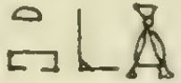 teb (box) |
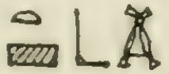 teb (coffin) |
confer with 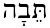 |
| Erman 1892 ZDMG | Brugsch & Erman 1889 | 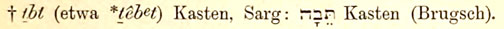 tbt (box & coffin) loanword to tebah (box) |
loanword |
|
| BDB 1906 | Erman 1889 | probable loanword |
||
| Erman & Grapow 1921 | E-G 1921 | 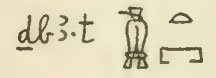 ḏb3.t box and coffin (no tebah anywhere in this Aegyptisches Handwörterbuch dictionary) |
tebah missing 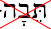 |
|
| Erman & Grapow 1926 | E-G 1926
|
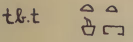 Box: Greek period only (too late for a loan word to Hebrew) |
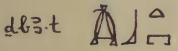 Shrine/coffin/sarcophagus. Maps to Coptic TAIBE/TAIBI — yet no mention of Hebrew tebah |
tebah missing |
The only word that connects through all this is Brugsch's 1867 box teb.
This ends up as the sarcophagus word in the 1926 magnum opus of Erman and Grapow - without any mention of tebah at all. Notice that the box has become a sarcophagus.
The Gardiner glyph system has standardised symbols which we still use today, originally about 750 glyphs. The hand-drawn Egyptian glyphs of Brugsch, Erman and Grapow could be written in Gardiner notation as;
| Author | Heiroglyphs | Gardiner Glyphs | Gardiner codes |
|---|---|---|---|
| E&G 1926 |
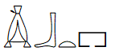 |
T25(reed float) + D56 (foot) + X1 (loaf) + O1 (house plan) phono (ḏb3)+ phono complement (b again) + phono (t) + determinate (enclosure) |
|
| E&G 1921 |
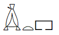 |
T25(reed float) + X1 (loaf) + O1 (house plan) phono (ḏb3) + phono (t) + determinate (enclosure) |
|
| Br 1867 |
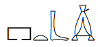 |
So same word as ḏb3.t 1926 |
The sound of "ḏ" is a strong "d" sound, like a "dg" as in "hedge", making the word sound like "dgeb-at". That is getting further away from tebah "teh-bah" in old Hebrew. One more reason for E-G to drop the connection with tebah, and it stayed dropped with Lambdin in 1953.
As Cohen further explains,20 tebah was conspicuously absent from Lambdin's systematic Egyptian loanword catalogue in 1953. Lambdin went through the entire Hebrew Bible and identified only 40–50 Egyptian loanwords — all concrete, specific, culturally Egyptian concepts: gome (papyrus reed), ye'or (Nile/river), Paroh (Pharaoh), and units of measure like eifah, hin, zeret. A mysterious word like tebah with no clear Hebrew etymology was an obvious candidate for Egyptian origin. Lambdin was not convinced.
Cohen (1972) and onwards
Cohen's 1972 paper systematically challenges each Egyptian word association and has not been rebutted since.21 Corresponding with Cohen in 2004, he reiterated that his paper "has been cited many times" and that "he still stood by what he said back then."22Cited yes — but not rebutted. 23
Wenham (1987) asserts Egyptian etymology without citing Cohen.24 Hoffmeier (1997) asserts it again, without engaging Cohen.25 Spoelstra (2020)26 accurately quotes Cohen's demolition and confirms his functional conclusion — "terminus technicus for a life-preserving receptacle". Instead of stopping there, he blends Cohen's "protective quality of divine origin" into a "contra coffin" and extends into a framework of ziggurats, covenant theology and cosmic symbolism. For this mystical contra-coffin (Götterschrein) link he uses Yahuda — already addressed by the same Cohen who led him to "life-preserver," and by Spiegelberg, whom Cohen cited. Spoelstra never rebutted Cohen — he simply constructed a framework in which a life-preserver could also be a coffin. The framework attempts to do the work the philology refused to do.
Cohen's "protective quality of divine origin" fits Noah's Ark — God instructed its construction. The baby basket records nothing more than a desperate mother and some reeds. So Cohen's phrase is strained for the tebah basket. Cohen, honest as he is about the textual limitations, calls Moses' baby basket a "literary allusion" to Noah's ark — which keeps the term coherent but only by treating one of the two occurrences as derivative. All these writers, it should be noted, treat Noah's Ark as fiction.
HALOT
BDB's "prob." did not survive uniformly. Most traditions retained it; some left out "prob." and made it a fact. HALOT27 is the scholarly successor to BDB — the lexicon commissioned to be more rigorous — and it carries that weight in Hebrew studies.
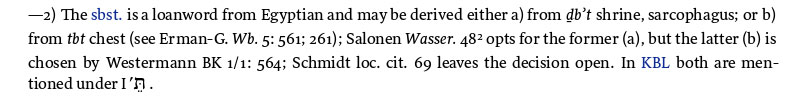
HALOT states it as fact — "The sbst. is a loanword from Egyptian". It then offers two competing donor words: either ḏb't (shrine, sarcophagus — Salonen28) or tbt (chest — Westermann BK 1/1: 56429). Schmidt (BK 2: 68f.) leaves the decision open. The conclusion is certain; the evidence is not. Three scholars disagreeing over two competing donor words, yet HALOT has turned BDB's "probably" into a fact.
Salonen (1939) is the scholar supporting option (a), according to HALOT. His book is a cuneiform lexicon of Mesopotamian watercraft — every Sumerian and Akkadian word for a boat, barge, or raft, with citations from ancient texts.
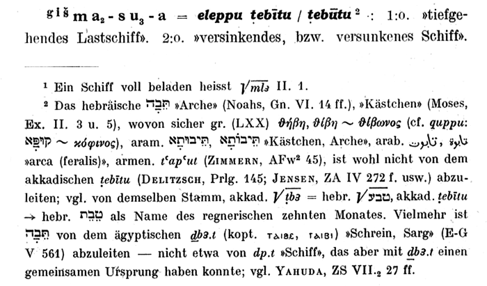
Salonen, Die Wasserfahrzeuge in Babylonien, Studia Orientalia 8/4 (Helsinki, 1939), p. 48, fn. 2.Translation
The Hebrew תֵּבָה "ark" (Noah's, Gn. VI.14ff.), "casket" (Moses, Ex. II.3 and 5), from which certainly Greek (LXX) Θήβη, Θίβη ~ Θίβωνος (cf. quppu: קוּפָּא ~ κόφινος), Aramaic תֵּיבוּתָא, תֵּיבוֹתָא "casket, ark", Arabic طابوة, طابوت "arca (feralis)", Armenian t'ap'ut (Zimmern, AFw² 45), is probably not to be derived from the Akkadian ṭebītu (Delitzsch, Prlg. 145; Jensen, ZA IV 272f. etc.); cf. from the same root, Akkadian √ṭb3 = Hebrew √שָׁבַע, Akkadian ṭebītu → Hebrew טֵבֵת as the name of the rainy tenth month. Rather, תֵּבָה is to be derived from the Egyptian ḏb3.t (Coptic ⲑⲁⲓⲃⲉ, ⲑⲁⲁⲓⲃⲓ) "shrine, sarcophagus" (E-G V 561) — not from dp.t "ship", though dp.t and ḏb3.t could share a common origin; cf. Yahuda, ZS VII.₂ 27ff.
Salonen is saying four things:
- tebah is certainly not from Akkadian ṭebītu — he states this flatly.
- tebah is more likely from Egyptian ḏb3.t "shrine, sarcophagus" than from anything Akkadian — "Vielmehr" (rather/more likely), not a firm conclusion.
- Egyptian dp.t "ship" is ruled out as the direct donor — though dp.t and ḏb3.t could possibly share a common Egyptian origin ("konnte" — past subjunctive, doubly tentative). Salonen cites Yahuda in support of this distinction. Spiegelberg had already demolished Yahuda on exactly this point — that ḏb3.t "chest" and dp.t "ship" "have nothing to do with each other"30 — which makes Salonen's appeal to Yahuda an own goal.
- dp.t and ḏb3.t could possibly share a common Egyptian origin — the "könnte" applies here, to two Egyptian words, not to tebah at all.31
HALOT cites a footnote in a Mesopotamian nautical glossary that opens with "ist wohl nicht … abzuleiten" ("is probably not to be derived from"), as an authority for the Egyptian origin of a Hebrew word.
E-G's entry for tb.t carries the note "vgl. ḏb3.t" — "compare ḏb3.t." Salonen read this and promoted it to "könnte... einen gemeinsamen Ursprung haben" — could share a common origin. HALOT read Salonen and assigned him as authority for option (a). The evidential base for the dominant tradition is "vgl." — a cross reference.
Westermann — HALOT's option (b), citing BK 1/1: 564 — does not choose between the two Egyptian words either. His discussion at pp.564–56632 surveys the competing etymologies and concludes that the descriptions and designations of the ark and the Babylonian flood vessel "each have their own history."33 That is not a verdict for Egyptian tbt; it is a refusal to commit. HALOT has converted his non-conclusion into a source for option (b).34
Schmidt (BK 2: 68f.)35 is cited by HALOT as leaving the decision open — which is the most accurate summary of the three. The decision has been open ever since the Septuagint pronounced the tebah of baby Moses in Greek letters.
Summary of Citation Trail
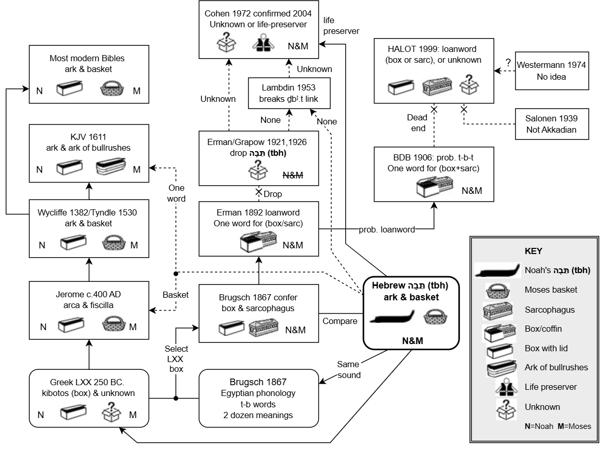
The chart traces two parallel traditions — the translation tradition (left column) and the Egyptian etymology tradition (centre) — both responding to the same Hebrew word tbh. The right column shows what the lexicons made of it — BDB (1906) cited Erman's 1892 loanword claim as probable. By 1921 Erman had quietly abandoned the equation, and again in 1926. Neither Lambdin (1953) nor Cohen (1972) found anything to revive it. HALOT appears to have recognised that the E-G trail was exhausted, and went looking for alternatives. What they found — Salonen (1939) and Westermann (1974) — provided no Egyptological support whatsoever. Salonen was dismissing a rival etymology in a footnote about Mesopotamian watercraft. Westermann explicitly refused to commit. Neither had the Egyptological standing to undo what E-G 1926, Lambdin 1953, and Cohen 1972 had collectively established. HALOT dressed up a dead trail with fresh citations and called it open.
What stands out is how lightly the etymology tradition rests on its foundations. No source in the centre column was focused on tebah. Brugsch was compiling an Egyptian dictionary. Erman was arguing a broad thesis about Egyptian-Semitic language relationships. BDB was producing a Hebrew lexicon. Salonen was cataloguing Mesopotamian watercraft. The tebah entry in each case is a footnote, a passing comment, a single line in a long list. The tradition built from incidental observations, not sustained inquiry.
The LXX column tells its own story — two translation teams working in isolation who could not agree on what tebah meant. See Excursus: The LXX.
Observations
Accidental Noah's Ark Experts
Sources cited as authorities for the Egyptian loanword claim are not works focused on tebah. In most cases the citations are little more than a footnote, a single line, or a passing comment in a work focused entirely elsewhere.
| Author | Work & size | Subject of work | tebah note | Nature of comment |
|---|---|---|---|---|
| Brugsch (1867) | Hieroglyphisch-Demotisches Wörterbuch, 7 vols, 1418 pp. | Egyptian lexicon | Two cross-references in the T-B root entry, Vol. 4 p.1628 | Comparison (cf.) — no loanword claim |
| Erman (1892) | ZDMG paper, 37 pp. | Egyptian–Semitic language relations | One line, p.123 | Loanword marker applied; no argument given |
| Salonen (1939) | Die Wasserfahrzeuge in Babylonien, 199 pp. | Mesopotamian watercraft terminology | Two-line footnote, p.48 fn.2 | Dismissing a rival etymology in passing |
| Westermann (1974) | Genesis 1–11, BK 1/1, 636 pp. | Genesis commentary | Three pages, pp.564–566 | Surveys options; refuses to commit |
| Schmidt (1974) | Exodus, BK II/1 | Exodus commentary | p.68f. | Leaves decision open |
Watch the qualifiers: Brugsch's "compare" becomes Erman's "loanword" becomes BDB's "probable." E-G dropped tebah but it stuck anyway. Likewise, Salonen promoted E-G's "vgl." to a "probable", then HALOT made it a fact. Qualifiers apparently have a limited shelf life, so a suggestion ends up as a fact.
Why borrow at all?
This etymology never tackles why the author of Genesis would borrow a foreign word in the first place. Hebrew already had a word that covered the chest-to-coffin range perfectly — aron ( אָרוֹן ), used 202 times in the Hebrew Bible for storage chest, the Ark of the Covenant, and the only coffin in the entire Hebrew Bible (Joseph's, Genesis 50:26). If Moses wanted to borrow an Egyptian word meaning chest or coffin, aron already did that job. There was no lexical gap for tebah to fill. It was used because it meant something aron couldn't do — such as descirbing a vessel that keeps you from drowning for instance. The suggested Egyptian loanwords never proved an etymology nor told us the meaning of tebah — but now they fail to explain why Moses would have needed it at all.
The rarity of tebah compounds this. Genuine loanwords enter the vocabulary — they get used, spread, become ordinary. All of Lambdin's confirmed Egyptian loanwords appear repeatedly across different contexts, different authors, different periods. tebah appears exactly twice, in exactly two stories by the same author (non-JEDP framework), and nowhere else in the Hebrew Bible or any other ancient Hebrew literature. That is not how borrowed words behave. The rarity of tebah is evidence against the loanword claim, not for it.
No Egyptian word explains tebah. Cohen said so.36
What makes a loanword?
When a word is declared a loanword, it should match both the phonological (sound) and semantic (meaning) of the donor word, as well as a plausible historical connection. A control case sits on the same page as tebah in Erman's own 1892 paper — the entry immediately above it: † d3 → צִי (tsiy, "ship"). Egyptian d3 means "to cross over / ship"; Hebrew tsiy means "ship." Same sound, same meaning, Moses knew both — he was educated in Egypt (Acts 7:22). In consonant shorthand: Egyptian T → Hebrew T, clean. Lambdin confirmed it in 1953. Erman's † was not applied carelessly — he knew what a loanword looked like. Which makes his later withdrawal of the tebah equation all the more telling.
The Cambridge Handbook of Phonology defines a loanword as "a word introduced to one language... from another language... whose phonological shape (or an approximation thereof) is introduced into [the borrowing language] along with its meaning."37 Haugen's foundational study of linguistic borrowing established explicit criteria for identifying loanwords, requiring both formal and semantic correspondence.38 Campbell's standard textbook on historical linguistics frames the question as: "What are the methods for determining that something is a loanword?" — and answers with phonological correspondences, semantic considerations, historical contact, and distribution among related languages.39 It is not enough to be only phonetically similar, or only semantically similar. Both are essential just to put a word on the table as a possible loanword. Additional factors might bolster the case to a "probable".
Not so for the tebah candidates. Even the phonology of matching the letters תֵּבָה to ḏb3.t (T-B-H against D-B-T) is dubious.40 Brugsch himself — the man credited with proposing the equation — explicitly rejected a cognate proposal at Vol. 2, p.628 of his own Wörterbuch because the two words sound differently ("dem ganz anderen lautenden Worte"). The ḏb3.t → tebah equation fails by his own stated standard. Under the post-1927 Gardiner standard, ḏb3.t matched against tebah gives: ḏ≠T (mismatch), B≈B (match), H≠T (mismatch) — two out of three fail.41 Under Brugsch's own system, where his T covers the same consonant Gardiner writes as ḏ, the match improves to T≈T, B≈B — but H≠T remains. The feminine ending H in tebah is not a root consonant, which Brugsch himself would have known — leaving a clean two-consonant match in his own notation. It is the tradition's adoption of Gardiner's ḏ that introduced the apparent D≠T mismatch. Not a valid cognate by any phonological standard regardless — but the mismatch is in the tradition's rendering, not Brugsch's. Not that you need to be a philologist to find it unconvincing that two words are "probably" the same if all they share is the same middle sound.
Any loanword that fails in either phonology or semantics should be disqualified, but let's be a bit more lenient. The following table compares the three Egyptian words proposed as the source of Hebrew tebah. Erman's confirmed loanword tsiy — from the same page — is included as the control. Note that both dp.t and tsiy are Egyptian ship words: dp.t is Yahuda's proposed donor that failed every test; tsiy is what a genuine Egyptian ship loanword actually looks like in Hebrew. Applying the primary loanword criteria to each:
| Criterion | ḏb3.t → tebah shrine/sarcophagus (tradition) |
tb.t → tebah chest/box (Brugsch/Westermann) |
dp.t → tebah Egyptian ship (Yahuda's rescue word) |
d3 → tsiy צִי Hebrew ship word (real loanword, Erman 1892) |
|---|---|---|---|---|
| 1. Phonology — consonants correspond by known rules | ❌ Ḏ→T wrong; 3→H no rule; B=B only | ✅ T→T, B→B; H absent in tb.t | ❌ D→T wrong; P→B marginal; T→H no rule | ✅ T→T clean; ship in both languages |
| 2. Semantics — meaning transfers coherently | ❌ Cohen: land-based only | ❌ Cohen: land-based only | 0.5 Ship but not basket | ✅ "ship" in Egyptian, "ship" in Hebrew — identical |
| Score Essential (1 + 2) | 0% | 50% | 25% | 100% |
| 3. Historical contact — Egypt/Israel contact documented | ✅ Moses in Egypt | ✅ Moses in Egypt | ✅ Moses in Egypt | ✅ Moses in Egypt; Erman 1892 p.123 |
| 4. No native equivalent — Hebrew lacked the concept | ❌ aron (אָרוֹן) covers chest/coffin — 202 occurrences | ❌ aron (אָרוֹן) covers chest/box — 202 occurrences | ❌ Multiple Hebrew words for ship exist | 0.5 Hebrew oniyah is a common boat, but tsiy is an official vessel |
| 5. Coptic reflex — confirms phonological chain | ✅ THBE/TAIBE — same word, dialect variants (Crum p.397a) | ✅ THBE matches tebah | ❌ No relevant Coptic reflex | ✅ Coptic attested |
| 6. Included in loan word catalogue — Lambdin (1953) | ❌ Not listed | ❌ Not listed | ❌ Not listed | ✅ Listed by Lambdin (1953) |
| Score Additional (3 to 6) | 25% | 50% | 25% | 88% |
| Essential x additional % | 0% | 25% | 6% | 88% |
The highest score is for tb.t — Brugsch's actual word, its phonology works and the Coptic confirms it. It still fails the Egyptological test (Cohen: only ever used for land-based funerary objects) and the basket fails the semantic test too. The tradition's word ḏb3.t and Yahuda's rescue word dp.t score equally poorly. Meanwhile the control — tsiy, Erman's genuine Egyptian ship loanword from the line above tebah on the same page — scores 88% overall. That is what a real loanword looks like. No tebah candidate comes close. Etymology remains undetermined.
Moses Had a Better Word
Two more tests that require no Egyptology: Does the meaning fit both occurrences? And did Hebrew already have that word? Every proposed meaning fails both.
| Proposed meaning | Fails because | Hebrew word that Moses used for other things? |
|---|---|---|
| Ship | Moses' basket is too small to be a ship | oniyah — 31× |
| Box/cuboid | Moses Papyrus reeds almost certainly oval or circular form, particularly common in ancient Egyptian basketry | aron — 202× |
| Coffin | Both tebah's have living occupants, active missions, provisions, contingency plans. The ark is oversized for a coffin box. | aron — 202× Gen 50:26 |
| Chest | Noah's ark too big for a chest/box. | aron — 202× Exodus 25 |
| Container | Non-descript — no shape implied | keli — 320+× |
Moses had the right word for every proposed meaning and chose not to use it — twice, deliberately, for two objects that share only one property: both preserve life.
What Does tebah Mean?
The Targum Onkelos renders tebah as Aramaic תֵּיבוּ — not a translation but the same word in the sister dialect, same root ת-ב , same consonants, different morphological ending.42 The Aramaic speakers imposed no geometry because they needed no interpretation. They already had the word. Greek librarians had to spell it.
HALOT (1999) replacement for BDB is no help — Salonen and Westermann are telling us what tebah doesn't mean, or talking about Akkadian flood stories.43
After concluding that none of these ideas are workable, Cohen proposes a different tack - a semantic one. Cohen's tentative answer is that tebah carried "some protective quality of divine origin" — Moses used it as a deliberate literary allusion to Noah's ark, not because the two vessels share a shape, but because they share the same purpose.
I would take Cohen's idea one step further. Both are specially prepared vessels to prevent drowning. Maybe tebah just means lifeboat.
Beyond Etymology
tebah is not alone in this. Genesis 6 contains an unusual cluster of words that all resist etymology: gopher wood, kopher, tsohar, even Eden. These are not random gaps scattered across the Hebrew Bible — they are words from the same era all stopping at the same wall. If the flood account is historical, they may be antediluvian vocabulary — like the royal cubit.44 No point rummaging through Egyptian and Akkadian, since they are just as lost as everyone else. The honest answer for all of them is the same one Cohen gave for tebah: unknown.
So where did Moses get the word? From Noah's journal?
Excursus: The LXX
The LXX (c.250 BC) rendered tebah as kibotos — chest or box — for Noah's vessel.45 Jerome (c.400 AD) translated it as arca.46 Wycliffe (1382) coined "ark" from arca.47 Tyndale (1530) went back to the Hebrew, saw tebah, and still wrote "ark" — the English word was already fixed.48 The English word "ark" has no Hebrew ancestry. It is Greek → Latin → English only.
The LXX project was deliberately isolated — the Letter of Aristeas describes each scholar in his own cell. The contrasting translation of tebah between the Genesis team and the Exodus team makes it look like they never compared notes. Genesis turned Noah's tebah into a box, and Exodus left tebah as a transliteration. Which team do you trust? Elsewhere the Genesis team does not have the best track record of careful and conservative scholarship. Here are some genuine bad calls for obscure words:
- Gopher wood became ξύλα τετράγωνα, squared timber — an invention with no basis in the Hebrew. Rejected by most Bibles today (gopher).
- Tsohar became ἐπισυνάγων, collecting/gathering — a wild guess. Rejected by most Bibles today (window or opening).
- Eden became παράδεισος, paradeisos or paradise — after the Old Persian for walled garden - bit of a stretch. Most Bibles are back to Eden.
None of these are transliterations. The LXX Genesis authors came across tricky words and found what they thought would be a good word to replace them. Perhaps the team assigned to Genesis had a more rubbery mandate — after all, it's only an ancient mythical legend, so just make it read well in Greek.
But the bad call beyond them all was for a word that is not even obscure.
- Raqia — the spread-out expanse of Genesis 1 — became στερέωμα, a solid dome. Followed by KJV (firmament), rejected by NASB (expanse).
This word is quite straightforward. Raqa means "to spread out", a well known verbal description for hammering gold into thin sheet (Exodus 39:3 - same book!), God spreading out the earth (Isaiah 42:5, 44:24). So raqia, the noun of the verb, is simply "spread out stuff", which NASB renders quite reliably as "expanse".
So what got into the LXX writers to call it stereoma — a solid dome? There is zero connection here. This looks like the librarians in Alexandria were not up-to-date with the latest cosmological models coming out of Greece, despite Eratosthenes (c.276–194 BC) doing a great job determining the cirmcumference of the earth. Steeped in histry, they may have assumed this Hebrew creation story was in the same league as ancient Babylonian, Greek, Egyptian traditions that all had a solid dome overhead and a flat earth underfoot. Back in the dim halls of the library of Alexandria, the LXX Genesis authors were busy doing eisegesis — inserted their own ideas into the text — which ended up as firmament for no good reason.
For Moses' basket the Exodus team used thibis — a transliteration of tebah into Greek letters, not a translation. Liddell-Scott defines θίβις as "a small basket made out of strips of papyrus"4950 — but that definition is itself derived from this single LXX usage; θίβις has no independent Greek meaning. It's not a word. The Exodus team simply wrote the Hebrew sound in Greek letters. Working in isolation, they never knew the Genesis team had already decided tebah was a box. Between them, they could not agree — one team translated, the other transliterated. That is not what happens with a well-understood loanword.
And not even a good choice. Ironically, since κιβωτός is a sealed box/chest, the basket for baby Moses is a better candidate than Noah's huge vessel.
One further detail about boxes and coffins (Hebrew aron). The LXX renders Hebrew aron as κιβωτός throughout — for the Ark of the Covenant, for storage chests, for donation boxes. When LXX read aron for Joseph's coffin (Genesis 50:26), they switched to σορός (a funerary urn or bier) — the one context where aron unambiguously means a container for a corpse. They never used this word for tebah. Whatever the Genesis team thought tebah meant, they reached for the chest/box word (κιβωτός), not the coffin word (σορός). The "coffin" reading that entered the tradition through Erman (1892) and BDB (1906) has no support from the oldest translation. The LXX, for all its other liberties with tebah, never went near coffin.
References
↩1. Pronunciation note. Modern Hebrew pronounces תֵּבָה as Tay-vah — the ב having shifted from B to V post-biblically. In Biblical Hebrew the ב was still a hard B, giving Teh-bah, which aligns with Brugsch's Egyptian teb. The H in tebah is the feminine ending, not a root consonant — so the consonantal root is T-B, matching teb on both counts in Brugsch's pre-Gardiner notation.
↩2. Cohen, p.37 (opening).
"The term תבה occurs in the Hebrew Bible in but two episodes, the story of the flood, and the story of Moses' birth. Its usages in these two cases are radically different. In the former, תבה denotes a colossal ark, while in the latter, the meaning is a receptacle of infant size."
↩3. A hapax legomenon (Greek: "said once") is a word appearing only once in a corpus, like "gopher" wood. A dis legomenon ("said twice") appears exactly twice. tebah is a functional dis legomenon — both occurrences serve the same function (life-preservation) across two entirely different narratives, and the word never enters general Hebrew usage.
↩4. Champollion announced the decipherment of Egyptian hieroglyphics on 27 September 1822, using the Rosetta Stone — a priestly decree of 196 BC in three scripts: hieroglyphics, Demotic, and Greek. The Greek provided the key. His recognition that hieroglyphics included phonetic signs ended 1,400 years of silence and founded a new field of study — Egyptology.
↩5. Cohen (1972) fn.14 says Brugsch "apparently" connected tebah to Egyptian — the hedging was warranted. Brugsch's entry (Vol. 4, p.1628) uses cf. (confer — "compare"), not an explicit loanword claim. His preface (Vol. 1, Einleitung p.XIII) defines cf. as Latin for "compare" and explicitly distinguishes Lehnwörter (loanwords) from stammverwandte Wurzeln (cognate roots). Brugsch was comparing, not claiming a loanword.
↩6. Brugsch, Vol. 1, Einleitung pp.V–XIV. The abbreviations list (p.XIII) defines cf. as confer — Latin for "compare" — nothing more. Pages V–VI give the Fundamental-Lautzeichen (sign table) with four dental values: plain t (X1, loaf), ṭ (D46, hand = modern d), t′ (I10, cobra = modern ḏ), t′ (V13, rope = modern ṯ). Pages VI–IX give his word-formation principles — eight forms of root development, all framed as kinship observations within a comparative Semito-Egyptian framework, not borrowing claims. At p.IX Brugsch explicitly defines his two categories: "Ich scheide hierbei ausdrücklich spät angenommene Lehnwörter... von wirklichen stammverwandten Wurzeln" — "I expressly separate here the late-adopted loanwords from the true cognate roots." His cf. comparisons throughout the Wörterbuch operate within the cognate/kinship framework — not as loanword attributions. His examples of Lehnwörter are demonstrably late Aramaic loans into Hebrew; tebah is ancient core biblical vocabulary and fits neither category. Brugsch's cf. was an honest acknowledgement that it didn't fit either bin.
↩7. All seven volumes searched in full. Brugsch's cursive handwriting across 1418 pages required OCR on rasterized page images; AI visual reading was used where OCR struggled. Search terms: Latin "arca," Hebrew תָּבָה, and Egyptian letter order under all four of Brugsch's t-variants (Vol. 1, Einleitung p.V–VI): plain t (X1 loaf), ṭ (D46 hand = modern d), t′ (I10 cobra = modern ḏ), t′ (V13 rope = modern ṯ). The ḏb3.t equation the tradition cites would file under his cobra section (pp.1671–1711). That section contains a cobra+foot word meaning roasting grill (ṯabā-t) and a cross-reference at p.1677 redirecting cobra+foot back to plain teb at p.1625 — confirming Brugsch himself did not treat cobra+foot as an independent chest/coffin word. Hebrew תָּבָה does not appear anywhere in the cobra section.
↩8. Thoth.AI (Miyagawa, So. University of Tsukuba, Japan, 2026). Thoth.AI isan AI-powered assistant for Ancient Egyptian and Coptic texts, created by So Miyagawa, Associate Professor of Linguistics and Egyptology, University of Tsukuba, following doctoral research at the University of Göttingen's Seminar for Egyptology and Coptic Studies. Built on Claude 3.5 Sonnet with RAG from Egyptological and Coptological sources. Available at: https://somiyagawa.com/thoth
The line-by-line reading of Brugsch Vol. 4, pp.1627–1628 was produced by submitting high-resolution page images directly to Thoth.AI, August 2026. Full reading on file.
↩9. Brugsch T-B semantic range (Vol. 4, pp.1624–1635, Lovett 2026).
exchange / repay / recompense — reward / retribution — close / shut / seal — blocked (of the nose) — enclose / clothe / wrap — furnish / equip — pierce / stab / strike — spear / lance / harpoon — chest / box / coffin / sarcophagus — birth-box / cradle — wing / flank (of army or city) — horned cattle — brick / tile / slab — pomegranate tree — branch / bough — circle / circumference / circular motion — wheel / rim of chariot — pomegranate wine — go in circles / circumnavigate — child's sidelock of hair — beseech / petition — altar offering / sacrifice — innermost sanctuary / Holy of Holies — ship's keel / the ship itself — hippopotamus.
The chest/coffin meaning (p.1628) is one cluster among some 25 attested across twelve consecutive pages. Any argument that Hebrew tebah derives from Egyptian T-B on the basis of a shared "chest/box" meaning must account for why this one cluster was borrowed and none of the others left any trace.
↩10. A sarcophagus (from Greek σαρκοφάγος, "flesh-eater") is the outer rectangular container into which a coffin is placed — an enclosing chest or shrine, not the body-shaped coffin itself. The Egyptian word ḏbꜣ.t, glossed by Erman-Grapow (1926) as "Schrein, Sarg" (shrine, sarcophagus), refers to this outer container. It is distinct from the body-shaped mummy case (qrsw) familiar from museum displays. The paper title "Noah Never Built a Sarcophagus" uses the word in this precise sense — the proposed Egyptian donor word is a funerary chest/shrine, not a vessel of any kind.
↩11. Phonological complication — ṯ vs ḏ. The Coptic reflex of this word is ⲑⲏⲃⲉ (thēbe), ⲧⲁⲓⲃⲉ (taibe), ⲧⲁⲓⲃⲗ (taibl) — all θ/τ-initial. Regular Egyptian sound-correspondence into Coptic has etymological ḏ yielding Sahidic ϫ (e.g., ḏd → ϫⲱ "to say"; ḏr.t → ϭⲓϫ "hand") — not θ/τ. The θ/τ-initial Coptic forms are more consistent with an Egyptian etymon in ṯ (tethering rope, V13) than in ḏ (cobra, I10) — i.e., possibly ṯbꜣ.t rather than ḏbꜣ.t. The whole identification should be treated as provisional until checked against the specialist literature:
— Hoch, J.E. Semitic Words in Egyptian Texts of the New Kingdom and Third Intermediate Period. Princeton, 1994.
— Muchiki, Y. Egyptian Proper Names and Loanwords in North-West Semitic. SBL Dissertation Series 173, 1999.
— Peust, J. Egyptian Phonology. Göttingen, 1999.
— Vycichl, W. Dictionnaire étymologique de la langue copte. Peeters, 1983.
None of these have been verified against this specific word at time of writing.
↩12. Erman, A. "Das Verhältnis des Ägyptischen zu den semitischen Sprachen" ("The Relationship of Egyptian to the Semitic Languages"). Zeitschrift der Deutschen Morgenländischen Gesellschaft (ZDMG) 46 (1892): 93–129. The tebah entry is at p.123. Entry: † tbt (etwa *têbet) Kasten, Sarg: תֵּבָה Kasten (Brugsch).
Accepted Brugsch's equation in print. Silently withdrew it 34 years later — see ref 7. His 1921 Aegyptisches Handwörterbuch also omits tebah — an earlier silent withdrawal, predating the full Wörterbuch by five years.51
↩13. The initial letter is not an 'l' but a 't' in tbt that lost its crossbar and part of its bottom serif due to poor inking — letterpress printing tolerances, also visible in twf on p.122. Erman's reconstruction *têbet (T-B-T) confirms the reading independently, and an underlined 'l' has no place in his transliteration system, and in any case Egyptian has no 'l' phoneme. It was easily deciphered by Thoth.AI palaeographic analysis of the MDZ high-resolution scan — see ref 36.
↩14. Brown, F., Driver, S.R., and Briggs, C.A. A Hebrew and English Lexicon of the Old Testament. Oxford: Clarendon Press, 1906. p.1061.
↩15. BDB cites Erman to volume and page (ZDMG xlvi (1892), 123) but gives no page reference for Brugsch — just his name. Seven volumes of 19th century handwritten hieroglyphic cursive are considerably harder to work from than a single line in a journal article. BDB most likely took Brugsch on Erman's authority without going back to the Wörterbuch directly.
↩16. Peter Jensen (1861–1936) was a German Assyriologist and a leading figure in pan-Babylonianism — the school holding that most of the Old Testament was written during the Babylonian captivity and that Hebrew writers were heavily influenced by Babylonian cosmology. His 1906 work Das Gilgamesch-Epos in der Weltliteratur found the Babylonian hero Gilgamesh under different guises across world literature, including the New Testament. BDB was itself organised around JEDP Documentary Hypothesis source criticism — the J and P source assignments appear throughout the tebah entry without comment. Both the Egyptian etymology and the Babylonian alternative were products of a scholarly culture that assumed Hebrew scripture was a late composite borrowing from surrounding cultures. The question was never whether tebah was borrowed — only from where.
↩17. Cohen, C. "Hebrew tbh: Proposed Etymologies." JANES 4 (1972): 37–51, fn.14.
↩18. Erman, A. and Grapow, H. Wörterbuch der Ägyptischen Sprache. Leipzig: J.C. Hinrichs / Akademie-Verlag Berlin, 1926–1963. Adolf Erman (1854–1937) initiated it in the 1890s; Hermann Grapow (1885–1967) carried it to completion after Erman's death. Vols. I–V (1926–1931) published jointly; Vol. VI (1950, with Semitic, Coptic and Greek indices) and final supplementary volumes (completed 1963) by Grapow alone.
The tebah equation is absent from both the main entries and the Hebrew index (Vol. VI, pp.243–244) — confirmed by direct examination. Both men were alive when Vols. I–V were published; neither included tebah. Grapow confirmed the omission in the 1950 index. The omission across three works spanning 1921–1963 represents a deliberate retraction of Erman's 1892 acceptance — see ref 2, ref 34.
↩19. Gardiner, A.H. Egyptian Grammar: Being an Introduction to the Study of Hieroglyphs. Oxford: Clarendon Press, 1927. Gardiner's Egyptian Grammar standardised the transliteration system used in English-language Egyptology. Erman and Grapow's Wörterbuch der ägyptischen Sprache (Berlin, 1926) appeared simultaneously and uses the same conventions. Gardiner cites the Wörterbuch throughout as "Wb." — his primary lexical reference.
↩20. Lambdin, T.O. "Egyptian Loanwords in the Old Testament." JAOS 73 (1953): 145–155.
Specialist Egyptian loanword catalogue. tebah does not appear.
↩21. Cohen, C. "Hebrew tbh: Proposed Etymologies." JANES 4 (1972): 51. Full text →
Cohen's summation: "In summation, we have shown that none of the solutions heretofore presented satisfactorily explain why the term תבה was used in both the biblical flood story and the story of Moses' birth. Two would-be solutions revolve, in one way or another, around the Egyptian db't, which never has anything to do with boats, and therefore cannot be compared... One partial answer to the problem, which is not without difficulty, but which may nevertheless be leading in the right direction, involves the similarity in description and preparation of the respective vessels in the Akkadian flood story and the story of Sargon's birth. The author of the story of Moses' birth might likewise have called the receptacle into which Moses was placed by the same name that was given to the biblical ark in the Hebrew flood story, because of some protective quality of divine origin which the latter possessed... This literary allusion is certainly not the entire answer to the problem (which surely cannot be completely solved until the meaning of תבה is established on a sound philological basis), but it is hopefully a step in the right direction."
↩22. Cohen, C. Personal communication to T. Lovett, 2004.
Cohen confirmed he still stood by the conclusions of his 1972 paper and that it had been cited many times without rebuttal.
↩23. Cohen, p.51 (conclusion).
"none of the solutions heretofore presented satisfactorily explain why the term תבה was used in both the biblical flood story and the story of Moses' birth... This literary allusion is certainly not the entire answer to the problem (which surely cannot be completely solved until the meaning of תבה is established on a sound philological basis)."
↩24. Wenham, G.J. Word Biblical Commentary: Genesis 1–15. Waco: Word Books, 1987. p.172.
Listed alongside BDB and Driver as asserting Egyptian etymology for tebah (Spoelstra, fn.7; fn.41). Does not cite Cohen (1972).
↩25. Hoffmeier, J.K. Israel in Egypt: The Evidence for the Authenticity of the Exodus Tradition. Oxford: Oxford University Press, 1997.
Asserts Egyptian etymology without engaging Cohen.
↩26. Spoelstra, J.J. Life Preservation in Genesis and Exodus: An Exegetical Study of the Tebā of Noah and Moses. Contributions to Biblical Exegesis and Theology 98. Leuven: Peeters, 2020. Originally PhD dissertation, Stellenbosch University, 2013.
Most recent peer-reviewed academic treatment of tebah. Accurately quotes Cohen's demolition of the Egyptian cognates (p.197): "never are either of these words used in Egyptian texts for boats." Then sidesteps it by accepting Yahuda's rescue — ḏb.t etymologically underlying ḏbȝ.t, making it "a legitimate cognate to convey a type of caïque" (p.198) — without engaging Spiegelberg (1929), who had demolished that same move. Concludes: "tebâ is a terminus technicus for a life-preserving receptacle" — Cohen's functional conclusion — while still maintaining Egyptian etymology. The central argument (Cohen) is quoted but not rebutted.
↩27. Koehler, L., Baumgartner, W., and Stamm, J.J. The Hebrew and Aramaic Lexicon of the Old Testament (HALOT).Trans. M.E.J. Richardson from the 3rd German edition. Leiden: Brill, 1994–2000
"Schmidt loc. cit. 69 leaves the decision open." "In ancient near-eastern traditional literature the vessel used by the hero of the deluge was either a huge ship, or simply a ship." Gold standard modern Hebrew lexicon — replacement for BDB.
↩28. Salonen, A. Die Wasserfahrzeuge in Babylonien nach sumerisch-akkadischen Quellen. Studia Orientalia 8/4. Helsinki: Societas Orientalis Fennica, 1939. p. 48, fn. 2. The footnote argues that Hebrew tebah derives from Egyptian ḏb3.t (Coptic ⲑⲁⲓⲃⲉ, ⲑⲁⲓⲃⲓ) "shrine, sarcophagus" (Erman–Grapow V 561), not from Akkadian ṭebītu. Salonen also rules out Egyptian dp.t "ship" as the donor, though he notes dp.t and ḏb3.t may share a common origin; he refers to Yahuda, ZS VII.₂ 27ff. The footnote is incidental to a Mesopotamian nautical lexicon — it addresses tebah only because the Akkadian term being glossed (eleppu ṭebītu, "deep-laden ship") shares a root with the competing Akkadian etymology for Hebrew tebah. Salonen is not mounting a case for the Egyptian loanword; he is dismissing the Akkadian alternative in passing.
↩29. Westermann BK 1/1: 564 is cited by HALOT as the authority for option (b) — Egyptian tbt as donor for tebah. See FN24 for what Westermann actually concludes.
↩30. Cohen, p.38 and fn.14. Consonantal correspondence: in post-1927 Gardiner notation, Egyptian ḏb3.t (ḏ-B-T) vs Hebrew תֵּבָה (T-B-H) — one certain match (B), one arguable (T/ḏ shifted between systems), one mismatch (H and T). In Brugsch's own pre-Gardiner system, which has no D consonant, the initial consonant he writes as T covers what Gardiner later writes as ḏ — so Brugsch's rendering teb matches Hebrew T-B cleanly on two consonants. The H in tebah is the feminine ending, not a root consonant. Spiegelberg's reaction to Yahuda: "ihm [ist] das Missgeschick zugestossen, dass er... db't... 'Kasten'... und das Wort dp.t 'Schiff', die gar nichts miteinander zu tun haben, zusammen wirft." (He had the misfortune of confusing db't 'chest' with dp.t 'ship', which have nothing to do with each other.)
↩31. Salonen's "könnte... einen gemeinsamen Ursprung haben" ("could share a common origin") applies to the relationship between Egyptian dp.t "ship" and ḏb3.t "shrine/sarcophagus" — not to the tebah equation. The tentative language is about two Egyptian words, not about Hebrew. HALOT's use of Salonen as authority for the Egyptian origin of tebah rests on a footnote whose main conclusion about tebah is actually stated with confidence: "Vielmehr ist תֵּבָה von dem ägyptischen ḏb3.t... abzuleiten" — "Rather, tebah is to be derived from Egyptian ḏb3.t." The tentativeness in Salonen is directed elsewhere.
↩32. Westermann, C. Genesis 1–11: A Commentary. BK 1/1. Neukirchen-Vluyn: Neukirchener Verlag, 1974. pp.564–566. English trans. Minneapolis: Augsburg, 1984. At pp.564–566 Westermann surveys the competing etymologies without choosing between them, concluding that the descriptions and designations of the ark and the Babylonian flood vessel "each have their own history." That is not a verdict for Egyptian tbt; it is a refusal to commit. HALOT converted his non-conclusion into a source for option (b).
↩33. Westermann, BK 1/1: 564–566. Full quote: "in Gilgamesh 11 it is to be noted that a gigantic cubic chest is understood to be a ship, while in Gn 6 the ark, which had already been likened to a ship, is described as a box; this shows that the descriptions and the designations each have their own history."
↩34. HALOT Vol. I, p.1720 (see FN22). Citing Westermann's conclusion, HALOT states the flood vessel "was either a huge ship, or simply a ship." The lexicon that declared tebah a certain loanword from Egyptian then declined to assign it a shape.
↩35. Schmidt, W.H. Exodus. Biblischer Kommentar Altes Testament II/1. Neukirchen-Vluyn: Neukirchener Verlag, 1974 (first fascicle). p. 68f. Cited in HALOT's preliminary remarks on tebah as leaving the etymology undecided. Schmidt's BK Exodus commentary was published in fascicles beginning 1974; the section at p. 68f. falls in the first band covering Exodus 1:1–6:30. No English translation exists.
↩36. Cohen, C. "Hebrew tbh: Proposed Etymologies." JANES 4 (1972): 51. Conclusion: "none of the solutions heretofore presented satisfactorily explain why the term תבה was used in both the biblical flood story and the story of Moses' birth... Two would-be solutions revolve, in one way or another, around the Egyptian db't, which never has anything to do with boats, and therefore cannot be compared."
↩37. Goldsmith, J. (ed.). The Cambridge Handbook of Phonology. Cambridge: Cambridge University Press, 2011. Definition of loanword: "a word introduced to one language... from another language... whose phonological shape (or an approximation thereof) is introduced into [the borrowing language] along with its meaning." Both phonological form and meaning are transferred together in a genuine lexical loan.
↩38. Haugen, E. "The Analysis of Linguistic Borrowing." Language 26, no. 2 (1950): 210–231. Foundational paper establishing explicit terminology and methods for analyzing borrowing. Requires both formal (phonological) and semantic correspondence for a loanword to be identified.
↩39. Campbell, L. Historical Linguistics: An Introduction. 4th ed. Cambridge, MA: MIT Press, 2021. Standard university textbook on historical linguistics. Frames loanword identification as requiring phonological correspondences, semantic considerations, historical contact, and distribution among related languages. "What are the methods for determining that something is a loanword and for identifying the source languages from which words are borrowed?" — discussed in the chapter on borrowing.
↩40. Cohen, fn.14 cont. "Never are either of these words used in Egyptian texts for boats." The proposed donor words db't and tbt denote land-based funerary objects only.
↩41. Cohen, p.38, fn.10–11.
"neither the biblical text nor comparative Semitic philology bear out Cassuto's contentions. As for his first objection (Gen. 7:18), the verb הלך is used elsewhere for ships not only in biblical Hebrew, but in Akkadian as well." Biblical: Is. 33:21; Ps. 104:26; 2 Chron. 9:21; 20:36–37. Akkadian example (fn.11): "If his ship arrives here from Cyprus" (PRU III, RS 16.238:10–11).
↩42. Targum Onkelos. Torah. Standardised in Babylonia, c.2nd century AD.
Renders tebah as Aramaic תֵּיבוּ — same root ת-ב, same consonants, different morphological ending only. Applied to Noah's vessel and Moses' basket. No geometric imposition.
↩43. One might speculate whether the post-WWI rise of völkisch academic antisemitism in Weimar Germany influenced Erman's silence on Hebrew connections in his 1921 Handwörterbuch. The background is not without irony: Erman's family had converted to Protestantism in 1902, presumably to navigate the growing antisemitic pressure in German academic life — yet in 1934 he was expelled from his university faculty position because, under Nazi racial law, he was classified as one-quarter Jewish. The man who had accepted the tebah equation in 1892 ended his career as a victim of the very ideology that made Hebrew scholarship uncomfortable. However, the same 1921 volume contains a three-page Hebrew index — suggesting Erman had no objection to Hebrew comparanda in principle. The more parsimonious explanation is that he had reconsidered the tebah equation on scholarly grounds in the 29 years since 1892. The political climate would become far more hostile after 1933, when Jewish scholars were expelled from German universities under the Law for the Restoration of the Professional Civil Service — but by then Erman had already dropped tebah twice.
↩44. The Hebrew word for cubit — ammah (אַמָּה) — derives from em (mother), meaning "mother of measure" or "mother unit." This encoding may be significant: the royal cubit clusters so tightly across Egypt, Babylon, Mesopotamia and beyond (518–531 mm) that a common anatomical origin from average human forearms is implausible — especially when the forearm is considerably larger than any post-flood population. The author proposes that ammah preserves the memory of an antediluvian standard — probably the forearm of the original man, transmitted through Noah, dispersed at Babel, and preserved in granite rods by civilisations who inherited the measure without inheriting the body. See Lovett, T., "Which Cubit for Noah's Ark?" Journal of Creation 20(3):71–77, 2006.
↩45. Septuagint (LXX). Genesis 6–9; Exodus 2:3,5. Alexandria, c.250 BC.
Renders tebah as kibotos (κιβωτός) for Noah's vessel; as thibis (θῖβις) for Moses' basket. The inconsistency is the key evidence against a geometric reading.
↩46. Jerome. Biblia Sacra Vulgata. c.383–405 AD.
Renders Noah's tebah as arca (chest/box); Moses' as fiscella scirpea (rush basket). Jerome preserved the LXX's distinction — two different words for the same Hebrew word.
↩47. Wycliffe, J. Wycliffe Bible. 1382.
First English Bible. Translated from the Vulgate, not from Hebrew. Coined "ark" from Latin arca. The English word has no Hebrew ancestry.
↩48. Tyndale, W. Tyndale Bible. 1530.
First English translation directly from Hebrew. Tyndale saw tebah and still wrote "ark" — the English word was already fixed after 148 years of Wycliffe usage.
↩49. Liddell, H.G., Scott, R., and Jones, H.S. A Greek-English Lexicon. 9th ed. Oxford: Clarendon Press, 1940. p.801b.
"thibis (θῖβις): a small basket made out of strips of papyrus." The LXX's word for Moses' basket — confirming it cannot be rectangular.
↩50. The Liddell-Scott definition of θίβις as "a small basket made out of strips of papyrus" is potentially circular. If the definition derives primarily from this single LXX usage, then citing LSJ to confirm the meaning of the LXX word is circular reasoning. One study raises suspicion over the definition "basket" and especially one "plaited from papyrus," noting that the Demotic word tby and its Middle Egyptian ancestor denote a "chest" or "box," and that the Hebrew Vorlage of the Greek translation likewise would ordinarily mean the same. θίβης does appear in Greek papyri outside the LXX (Grenfell 1896), but whether its meaning there is "basket" or "chest" remains contested.
↩51. The question of whether political climate influenced Erman's 1921 omission is addressed in ref 41. The present note records that the omission predates the worst of the Weimar antisemitism — the 1921 Handwörterbuch appeared before the Beer Hall Putsch (1923) and well before the Nazi seizure of power (1933). The scholarly explanation — that Erman had simply reconsidered — is the more parsimonious one.